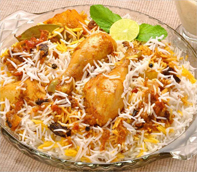
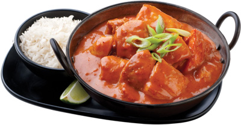
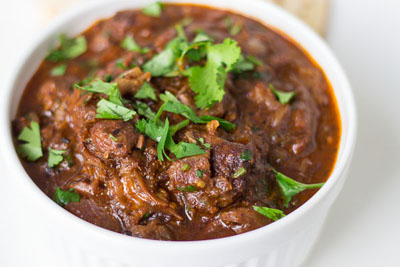
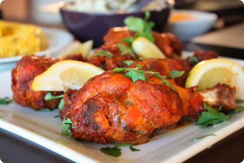

* click image to get the recipes.

Hyderabadi Biryani
Mutton/Chicken pieces marinated in spices, masala's and yogurt and cooked with rice. Served with a boiled egg and mixed salad.

Butter Chicken
Chicken marinated in yogurt and spice and cooked with a sauce made of Butter, tomato and various spices that gives the dish its unique flavor.

Vindaloo
Hot and spicy curry dish served with lamb, and sometimes mixed with cubed potatoes. Served with rice, chappatis or naan bread.

Tandoori Chicken
Marinated in yogurt, lemon juice and aromatic Indian spices and then grilled in a Tandoor or in an oven. This recipe needs to marinated at least 8 hours or overnight.